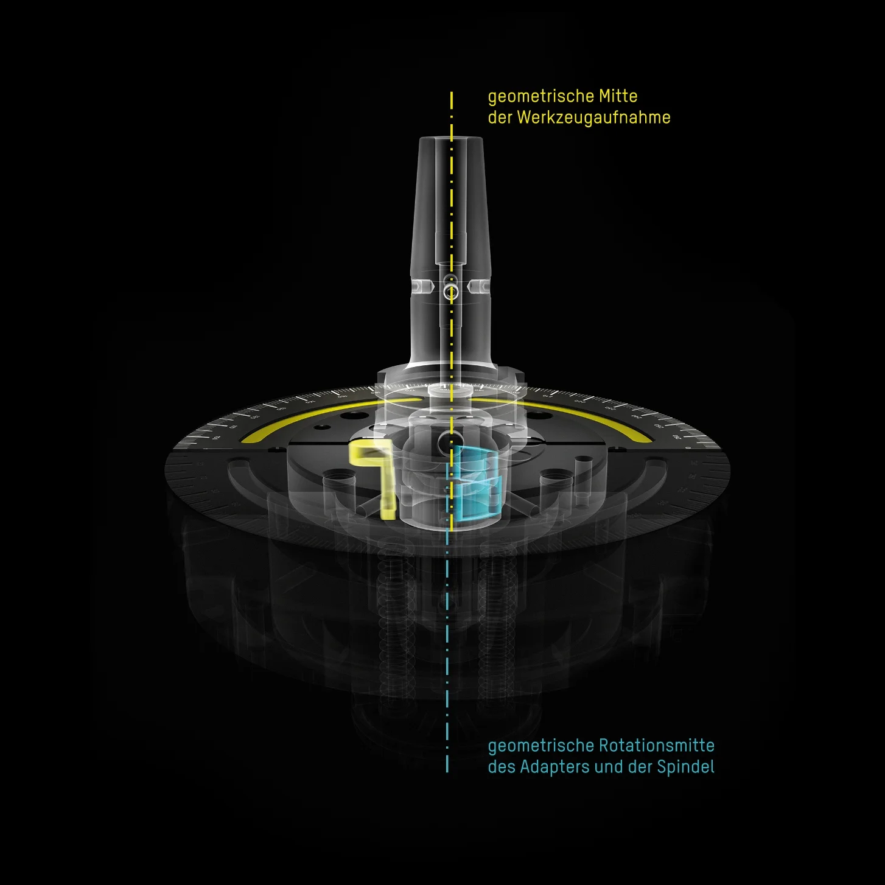

»toolBalancer«
The balancing system featuring state-of-the-art technology
and an ergonomic design

We stand for smart progress
With optimally and highly precisely balanced tools, you can achieve longer tool life, extended spindle runtime, and better surface finish on your components. With »toolBalancer«, you can bring not only your tools but your entire manufacturing process into perfect balance between sustainability, efficiency, and progress.


TÜV and UL/CSA inspected
500 kg solid base
Best balancing results: < 0.4 gmm
The High-Performance Synergy

»twinPanel« Safety Cover
»twinPanel« Safety Hood
Corresponds to DIN ISO 21940-23 Class C60 for maximum safety.
The internal “sacrificial pane” records contaminants such as residues of cooling lubricants and damage caused by component detachment. This takes into account the very important—and often overlooked—process of protective pane aging resulting from daily use. By allowing for quick and cost-effective exchange of the sacrificial pane, the ZOLLER »twinPanel« guarantees the long-term safety of your operators.
high-precision spindle
High-Precision Spindle
Accommodates virtually any tool holder with the appropriate balance adapter. Depending on the weight of the tool, the spindle rotates it at an adjustable speed ranging from 400 to a maximum of 1,200 revolutions per minute and measures the unbalance with an accuracy of < 0.4 gmm.
In designing the high-precision spindle, ZOLLER placed especially great focus on a safe and certified adapter-changing process. A special design feature avoids accidents and damage caused by balance adapters that are not securely fastened in the spindle.
Adapter Compartment
Adapter compartment with a swivelling front flap
Three storage places for ergonomic, back-friendly, and quick adapter changes without having to bend down.
Fork cutout
Fork Slot
For flexible installation and simple transport of »the« »toolBalancer« in your production facility using a pallet truck.
ZOLLER Control Software
Simple ZOLLER Operating Software
The structured, graphic representation intuitively guides the operator through the measurement and balancing process.
The machine is set up by providing the tool geometry data as input. All data is stored in the database and remains available for later use.
»Cockpit« Control Unit
Separate »Cockpit« Control Unit
It is adjustable in height and position, and the monitor’s inclination can be adjusted; it can be simply shifted to the required position, making the use of software as convenient as possible.
In addition to touch operation, the »cockpit« offers the option to input data via mouse and keyboard, as well as storage compartments for label and laser printers, handheld scanners, and tools such as Allen keys.
»twinPanel« Safety Cover
»twinPanel« Safety Cover
»twinPanel« Safety Hood
Corresponds to DIN ISO 21940-23 Class C60 for maximum safety.
The internal “sacrificial pane” records contaminants such as residues of cooling lubricants and damage caused by component detachment. This takes into account the very important—and often overlooked—process of protective pane aging resulting from daily use. By allowing for quick and cost-effective exchange of the sacrificial pane, the ZOLLER »twinPanel« guarantees the long-term safety of your operators.
high-precision spindle
high-precision spindle
High-Precision Spindle
Accommodates virtually any tool holder with the appropriate balance adapter. Depending on the weight of the tool, the spindle rotates it at an adjustable speed ranging from 400 to a maximum of 1,200 revolutions per minute and measures the unbalance with an accuracy of < 0.4 gmm.
In designing the high-precision spindle, ZOLLER placed especially great focus on a safe and certified adapter-changing process. A special design feature avoids accidents and damage caused by balance adapters that are not securely fastened in the spindle.
Adapter Compartment
Adapter Compartment
Adapter compartment with a swivelling front flap
Three storage places for ergonomic, back-friendly, and quick adapter changes without having to bend down.
Fork cutout
Fork cutout
Fork Slot
For flexible installation and simple transport of »the« »toolBalancer« in your production facility using a pallet truck.
ZOLLER Control Software
ZOLLER Control Software
Simple ZOLLER Operating Software
The structured, graphic representation intuitively guides the operator through the measurement and balancing process.
The machine is set up by providing the tool geometry data as input. All data is stored in the database and remains available for later use.
»Cockpit« Control Unit
»Cockpit« Control Unit
Separate »Cockpit« Control Unit
It is adjustable in height and position, and the monitor’s inclination can be adjusted; it can be simply shifted to the required position, making the use of software as convenient as possible.
In addition to touch operation, the »cockpit« offers the option to input data via mouse and keyboard, as well as storage compartments for label and laser printers, handheld scanners, and tools such as Allen keys.
Reach Your Destination with Safety and Quickness
»toolBalancer« makes tool balancing especially simple: thanks to the ergonomically designed »twinPanel« safety hood, a convenient membrane keypad, a compartment for balance adapters, and storage shelves in the spacious work area.
The ZOLLER operating software, with its structured graphic representation, intuitively guides the operator through the measurement and balancing process. Using the software options that correspond to balancing applications, all balancing applications on 1 to 2 balancing planes are available, such as fixed-point balancing with balancing screws, the use of balancing rings, or balancing through material removal such as drilling or milling.

Open the hood, release the clamp,
rotate the tool 180°, and clamp it in place

Open the hood,
correct the unbalance (e.g., using balancing screws)

Open the hood,
use the tool, and clamp it

Close the hood and start Run 1

Close the hood and start Run 2

Close the hood and start the test run; test run measurement
result
Our adapters: reliable and exact
The selection of high-precision ZOLLER balance adapters, with their unique design, allows you to clamp SK, HSK, and polygonal shank taper mounts using power-operated clamping—and, above all, with unprecedented levels of safety and repeatability.
Additional adapters available upon request.
From the Center to the Highest Precision
An unbalance in tools results from an asymmetrical design and the associated asymmetrical mass distribution. The ZOLLER »toolBalancer« resolves the unbalance by using like to counter like and relies on a deliberate center offset in the balance adapter during measurement and balancing of your tools.
The center offset balance adapter is constructed with a two-point contact system and a pressure piece. These features produce a strong, more easily measurable sensor signal and guarantee highly precise balancing results, especially for high-quality balancing and small unbalances.

Balancing Means Peace of Mind for Tools
If rotating tools are not running true, vibrations occur. Even at low speeds, these vibrations can lead to increased tool wear, reduced surface quality, and additional stress on the machine spindles. Therefore, have your tools balanced regularly on a ZOLLER balancing machine.
Learn more about the benefits of the ZOLLER Solution Balancing.

»toolBalancer« 550«
Make your selection simply and with an overview, or contact us! Maximum tool diameter: 480 mm, maximum tool length: 550 mm

»toolBalancer« 750«
Make your selection simply and with an overview, or contact us! Maximum tool diameter: 480 mm, maximum tool length: 750 mm